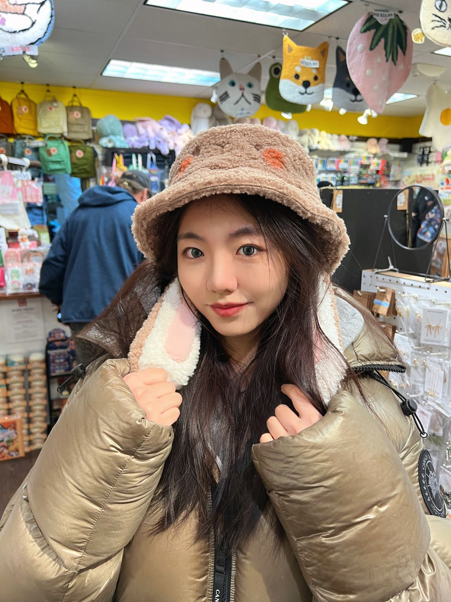

Jingrong Pan
Hi, I'm Jingrong Pan, a second-year Master's student in Information Science. I have a passion for music and enjoy playing both the piano and the Zhongruan, a traditional Chinese instrument.

Jiayi Chen
My name is Jiayi Chen, and I am from Jining, China. I am currently a master's student in the Information program. My undergraduate major was in Economics and Finance. I have a keen interest in the field of data quality, as I believe it plays a crucial role in making informed decisions and driving innovation. In my free time, I enjoy playing frisbee, skiing, and traveling, which allow me to connect with nature and different cultures.